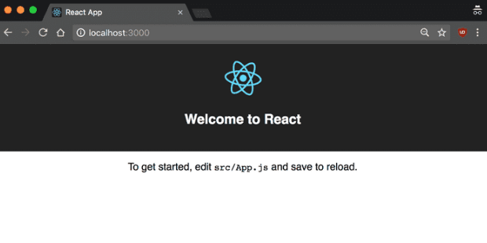

¿Qué es React?
- Es una muy efectiva, utilizada para crear interfaces de usuario intuitivas.
- De código abierto, creado por Facebook en 2013 y mantenido por la comunidad de software libre.
- Los desarrolladores lo utilizan para ocuparse de la capa de visualización de aplicaciones y sitios complejos.
- Es más rápido que otros, entre ellos, Angular.js, siendo ideal para quienes necesitan un framework básico, versátil y rápido.
- Destaca por su poco tamaño de registro, adaptabilidad, similitud con numerosas bibliotecas y una curva de aprendizaje moderada.
- Comprende a la estructura de interfaz de usuario, aunque también es una combinación sólida para crear aplicaciones receptivas de una sola página y aplicaciones de etapas cruzadas.


Instalación
Al igual que sucedía con Angular, para instalar React de forma local necesitas:
- Node.js
- npm package manager
Create React App
Es un entorno de que viene pre-configurado con todo lo necesario para comenzar tu proyecto. Por defecto crea un servidor de desarrollo en tiempo real
Para instalarlo, ejecuta el siguiente código en tu terminal, seguido de la carpeta donde se va a encontrar tu proyecto
Luego de que se instale, necesitas moverte al directorio de tu proyecto para crearlo
Acto siguiente, se abrirá una ventana en localhost:3000 con tu aplicación React
Workspace y aplicación inicial
Luego de haber seguido los pasos anteriores, verás algo así en tu editor de código
node_modules: contiene las dependencias npm del proyecto
public: esta es la raíz de nuestro servidor donde se podrá encontrar el index.html, el archivo principal y el favicon. Ese archivo html contiene un elemento <div> con id root, donde se cargará tu aplicación de forma dinámica.
src: es el directorio principal donde vamos a colocar los archivos de nuestros componentes. Allí es donde debe estar el punto de entrada de javascript en (index.js).
En index.js se inicializa el componente principal App.js, a través del método ReactDOM.Render. Este métdoo recibe como primer parámetro el componente a renderizar y como segundo el elemento del DOM donde el componente va ser renderizado
En la primera línea import React se está importando la librería React y la clase Component de la cual van a heredar todos los componentes que se creen mediante clases. Éstas requieren del método render() para poder funcionar.
Conceptos clave
Virtual DOM
Es una estrategia que utiliza React para optimizar el desempeño de una aplicación. En lugar de confiar solamente en el DOM del navegador, React tiene un virtual DOM propio. Esto deja a la biblioteca determinar qué partes del DOM han cambiado comparando contenidos entre la versión nueva y la almacenada en el virtual DOM, y utilizando el resultado para determinar cómo actualizar eficientemente el DOM del navegador.
Propiedades
También conocidas como "props", pueden definirse como los atributos de configuración para un componente. Éstas son recibidas desde un nivel superior, normalmente al realizar la instancia del componente y por definición son inmutables.
Estado y ciclo de vida
El estado de un componente se define como una representación del mismo en un momento concreto, es decir, como una instantánea del propio componente. Existen dos tipos de componentes con y sin estado, denominados statefull y stateless.
El ciclo de vida es una serie de estados por los cuales pasan los componentes statefull a lo largo de su existencia. Se pueden clasificar en tres etapas de montaje o inicialización, actualización y destrucción. Dichas etapas tienen correspondencia en diversos métodos:
- shouldComponentUpdate(nextProps, nextState): permite al desarrollador prevenir el re-renderizado innecesario de un componente, devolviendo falso si no es necesario. Recibe dos parametros, las nuevas propiedades y el nuevo estado.
- componentDidMount(): es llamado una vez que el componente es "montado", es decir, ha sido creado en la interfaz de usuario. Este es el lugar adecuado para realizar peticiones AJAX, setIntervals o integrar librerías de terceros.
- componentWillUnmount(): es llamado inmediatamente antes de que el componente es "desmontado". Es comúnmente usado para limpiar la demanda de dependencias del componente que no será simplemente removido con el desmontaje del componente. Es ideal para realizar operaciones de limpieza como listeners de eventos o temporizadores.
- render(): es el método más importante de los ciclos de vida y el único requerido en cualquier componente. Es usualmente llamado cada vez que el estado del componente es actualizado, reflejando los cambios en la interfaz de usuario.
JSX
React utiliza una sintaxis parecida a HTML, llamada JSX o JavaScript XML. No es necesaria para utilizar React, sin embargo, hace el código más legible, y escribirlo es una experiencia similar a HTML aunque en funcionalidad sea más parecido a Javascript
¿Cómo funciona?
Para comprender cómo funciona React es clave que nos situemos en un contexto, pues cuando se aprende desarrollo web se obtiene conocimiento de tres conceptos básicos:
- HTML
- CSS
- JavaScript
Antes de React estos conceptos funcionaban por separado, en diferentes archivos y carpetas, por lo que escalar y extraer diversas partes del código para reutilizar o migrar funcionalidades era más complicado. Por esto, los ingenieros de Facebook decidieron incluir todo en un solo paquete, al que llamaron “componente”. En los componentes, la estructura HTML y JS son inseparables, y combinables con CSS. Esto hizo posible la implementación de una nueva notación que hace más eficiente el desarrollo de aplicaciones escalables: JSX
Lo que hace React es, a través de código JSX, crear una representación en memoria del DOM; denominada “Virtual DOM”, a partir de la cual luego crea el DOM definitivo en el navegador. Este “Virtual DOM”, a diferencia del DOM común, pesa muy poco y utiliza escasos recursos para ser creado. Así que, en caso de que un componente cambiase su estado, y con ello la información a renderizar, React compararía los cambios realizados en el Virtual DOM, vería qué elemento o elementos han cambiado, y actualizaría solo esas partes en el DOM real. Al tratarse solo y exclusivamente de código JavaScript, el compilado y renderizado de todos estos cambios se realiza rápidamente.

¿Cuándo usar React?
- Cuando se trabaja a nivel de frontend en una interfaz que requiere altos niveles de interacción.
- Cuando el código base de tu web se está haciendo muy extenso y complicado de mantener, haciendo difícil el testeo.
- Cuando tu sitio web se demora en cargar y hay páginas que no responden, ya que esto puede ser signo de que hay muchos elementos recargando el DOM.